Resurrecting Atlantis is the arrival: winged marble gates open, a drowned city rises from black water, and a candlelit city of narrow streets takes him in, while the last line admits it was built out of 'the purest of fictions'.
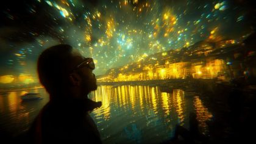
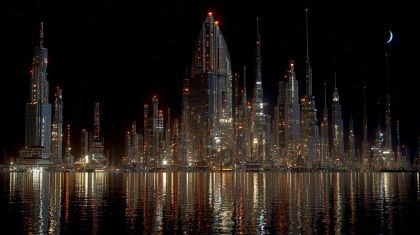
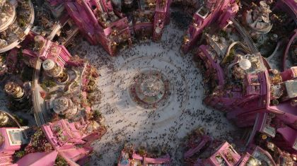
The poem
One long sentence carries him from the gates ('wings gifted from evolution', marble 'kissed by the hymns' of an orchestra of ancestors' dreams) down 'yellow brick roads', which make Oz's road to a made city explicit, following comets 'to the capital city of our collective consciousness.' Then comes the creed, said twice as if learned by heart: 'Here we are all one... here we are all safe', the pact made with nature, 'a relearned currency we reassess' as the price of admission. The repetition is the poem's music and its doubt. It sounds like a vow being rehearsed.
The turn is 'I know my soul and it could stay here forever, leaving behind crosshairs for continuums and strains for serendipity': the targeted body trades the gunsight for continuity. The last line both confirms and undoes the city: 'A city born in unison out of the purest of fictions welcoming me and welcoming all.' The governing images are gate wings and marble, comets over a road, flickering candlelight on smiles, narrow streets with long shadows, joyful noise that colours rainbows and sets clouds free, and the crosshair opening into rings.
Look
It is night throughout, and the city lights itself from inside. Gold reflections on black water are foil and cellophane strips on gloss-black card; neon is cut acetate gel backlit; candles are small amber paper flames on a flicker. Buildings are white card with grey gouache veining and a pearl wash, stacked in 4-5 depths with windows punched through and backlit, and fog is tracing paper. Keep the cyberpunk sheen in the plates and the cut-outs matte kraft, so the people always read warmer than the city.
Our best elements
The strongest things we already have for this poem: generated footage, Atlantis views, found film and painted kit sheets.
06.1 road to the city: crop off the figure and use the gold reflections and skyline as the causeway far layer
The only clip with the comet-gold city glowing across black water. It even has a sunglasses silhouette as framing reference.
far layer for atlantis_waterfront (06.2a) and the dome on the horizon in 06.1c
Figure-free, symmetrical, crisp reflections. It reads as a capital across the water at small size.
the city as it clears the waterline (06.2c)
Marble domes are what the first line names. It is calm, grey and figure-free, so it takes a falling-water card in front.
06.6a high plaza; the crosshair reticle sits on it in 06.5a
A round plaza seen top-down is a natural target shape for crosshair-to-rings, and its warm rose is the poem's one daylight-coloured stone.
plate for narrow_streets 06.4a
Figure-free, with strong vertical lanterns and a deep vanishing point for a tracking puppet. The red ties to his piping.
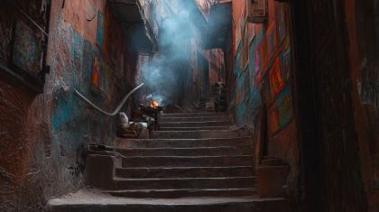
06.4b musician alcove; rainbow light thrown across the painted wall
The walls are barely two people wide, as the treatment asks, and the painted surfaces take projected light.
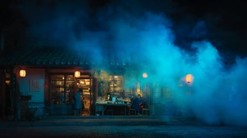
atlantis_gate interior beyond the booth: 'here we are all safe' (06.3c)
Small warm windows in a big cool fog read as welcome, and they give lantern-windows to open archive in.
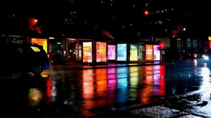
street-side surface for an archive answer; neon_reflections
Tall glowing vertical panes are the strongest kind of surface for opening archive film.
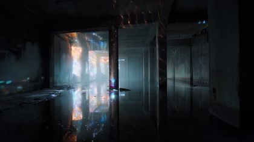
house_party_exterior door for the passage (06_L13) if P06-011 is not usable
A clear door frame with light inside and no figure.
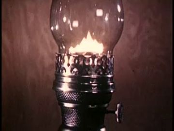
insert inside the ELDER's lantern glass on the causeway; reference for oil_lantern
A big bright flame in brass and glass, with real archive texture, exactly our prop.
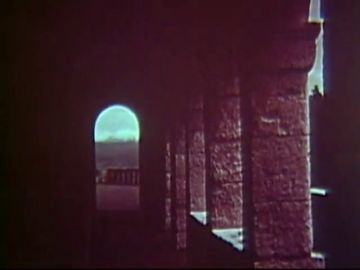
lantern-window design for the gate (06.3b)
One luminous arch in a deep red wall is the shape of a candle window.
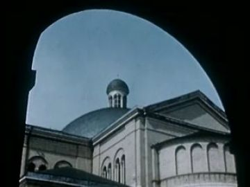
06.1c/06.3 'capital city' glimpsed through the gate arch
Its natural arch vignette matches the gate, and the civic dome fits 'capital of our collective consciousness'.
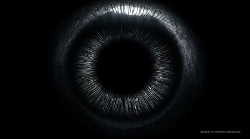
the end-state of crosshair_to_rings (06.5a): the reticle becomes this opening ring
Concentric rings around a dark centre, the visual rhyme the line needs.
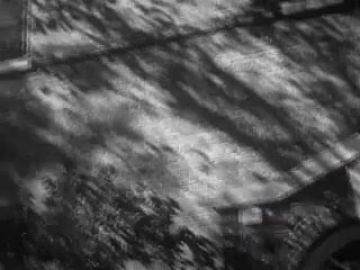
projected over the narrow-street walls for long_street_shadows
A real community street with moving shadows: 'shadows cast from narrow streets beaming with love'.
What we need
- All Atlantis packs (traveler, citizen, gatekeeper, elder) and party_guest are blank layouts. The citizen brief is one line ('light linen with neon-thread trim'), with no faces, ages or variants.
- poet.06.action has only 'stand · front'. It lacks walk (threequarter back), arms open, coin pinch, braced-to-open (hand at chest), arms up, the reach that stops short (the passage) and the sit ('could stay here forever').
- No yellow-brick causeway over black water in gen, views or archive. Generate the plate or build it as receding trapezoid cards.
- No admission booth or city gate with lantern-windows exists. view_006's red door is the nearest gate, and it is too corporate.
- Waterline falling has no source. Nothing shows buildings streaming water, so it needs a card water sheet pulled down plus water fx.
- No comets. Only rocket-flame archive (arch_230fcc4d), so draw them as paper streaks.
- poem_gen is dominated by teal-bedroom clips (G3, G5-G14, G17-G18). They are wrong for this poem; do not cut them in.
- The house-party door plate P06-011 has no thumbnail here to judge. It needs a figure-free version with a full door frame.
- Sound: hymn/orchestra swell for the gates, candle crackle, street guitar, crowd joy, music spilling from the door.
Characters
POET kit →
The arriving traveller. He walks the comet road, watches the city rise, pays the coin, walks the candlelit streets, unclenches in the plaza and stops at a door.
Costume. Black track jacket with red piping from the shoulders down the chest, black track trousers, black Chelsea boots, sunglasses as their own plug-in card. Add a second sunglasses card with two small pink/teal neon highlights for the city shots, and a gold rim on the city-facing edge.
Expressions. awe (head up to the comets), joy (open smile, arms open at the waterline), calm (closed mouth, chin level), braced (chin down, jaw set), head up (released, 'stay here forever')
Hands. relaxed, open (arms open), pinch(relearned_coin), fist at chest (braced), open at chest (released), in_pocket, reach-stopping-short (fingers slightly curled)
Cards to paint. walk cycle legs (threequarter back); head back-of-head looking up; head braced; head lifted; sunglasses card with neon reflections; pinch(coin) hand; fist-at-chest and open-on-chest hands; reach-stopping-short hand; sitting replacement (on a step); arms-up pose arms
poet.06.action shows only 'stand · front' with five hands (open, pinch coin, fist, hidden, in_pocket). The passage reach, the braced-to-open turn and the arms-up finale are all missing. The WHO column's red-piped jacket and sunglasses are right.
Its action sheet for this poem is on Character Kits v2.
open the action sheet →| action | beats | how the card does it |
|---|---|---|
| walk the comet road | weight shift → stride cycle in threequarter back → head tilts up → hold the look as a comet crosses | Threequarter-back body on a rail, thigh/shin brads cycling 4 drawings; swap to a head-up back-of-head card. |
| arms open at the waterline | arms at the sides → lift outward to 45° → hold as the water draws back past the boots | Front body; both shoulder brads rotate together; open hand cards; joy head. |
| pay the coin | hand into the pocket → out with the coin pinched → set on the counter → hold, fingers on the coin → release | Threequarter body; swap in_pocket → pinch(coin) → open flat on the counter; the coin card stays behind on the counter layer. |
| braced to open | weight on one leg, fist at chest, chin down → hold → head lifts, fist opens to a flat palm on the chest | Two replacement heads (braced, up) and two hand cards (fist, open-on-chest). Change the head and hand on the same frame, without rotating. |
| reach that stops short (passage) | profile, facing the door → right arm rises toward the frame → stops 10 cm short → holds through the line and the archive answer | Profile body; shoulder and elbow brads only; a reach hand card with fingers slightly curled. The head stays in profile; no other motion. |
ATLANTIS PEOPLE kit →
The people of the resurrected city: travellers who walk the road with him, citizens who smile behind candle windows and fill the plaza, a gatekeeper who takes his coin, an elder poet with a lantern who leads the generations.
Costume. TRAVELER: plain long travel coats in dust brown and slate, shoulder bags, scarves. CITIZEN: light layered linen (ivory, sand, pale rose) with thin neon-thread trim at the hems and cuffs (teal or pink), sandals or soft boots; mix ages and sexes. GATEKEEPER: high-collared booth uniform in deep green with a brass badge, seated. ELDER (poet_elder_coat): long patched coat with mismatched panels, wool scarf, brass oil lantern.
Expressions. calm, joy (smile), awe (looking up as the city rises)
Hands. grip(oil_lantern), cup(candle), open (arms up), wave, grip(guitar) / pinch (strum), relaxed
Cards to paint. citizen heads: at least 5 distinct faces (child, young woman, young man, elder woman, elder man); gatekeeper seated body + booth counter overlap; elder walking back view with lantern arm; traveler back views with bags; musician threequarter body with a guitar-strum hand; candle-cup hands; arms-up arm pair
atlantis.06.action offers only 'stand · front: stands and walks only in this poem'. That is wrong for the gatekeeper (seated), the elder (walks with a lantern) and the musician (plays). The WHO text has no faces, and the style strip shows the poet's heads, so the crowd risks becoming copies of him.
Its action sheet for this poem is on Character Kits v2.
open the action sheet →| action | beats | how the card does it |
|---|---|---|
| elder leads with the lantern | lantern raised slightly → steady walk away from camera → hold the lantern level | Back view body on a rail, lantern arm locked; the lantern card swings ±3° on its own brad. |
| smile in the candle window | face dim → candle lifts into frame → smile card swaps in → hold | Head-and-shoulders card behind the window cut-out; calm → joy head swap; candle on a stick. |
| everyone raises their arms | arms down → staggered lift over 6 frames → hold at the top on the last word | Shoulder brads only; all citizens share one 'arms up' card set. |
PARTY, CLUB AND DJ kit →
Guests entering the house at the end. They pull him through the door toward 07.
Costume. Night-out clothes, several variants: a satin shirt, a sequinned dress, a leather jacket, a bright headwrap, all painted with a warm interior-light rim on the door side.
Expressions. joy
Hands. relaxed
Cards to paint. three back-view party guest bodies; back-of-head cards (two hairstyles, one headwrap)
Party sheets are shared with 07. Only back views are needed here, so paint those first.
Its action sheet for this poem is on Character Kits v2.
open the action sheet →| action | beats | how the card does it |
|---|---|---|
| go in | walk toward the door → pause at the threshold → step through into the light | Back view on a rail that passes behind the door frame occluder; no heads needed beyond back-of-head. |
Props
Sorted by priority. Each has its design, how to build it, the references found in the archive and our footage, and a prompt for its card sheet.
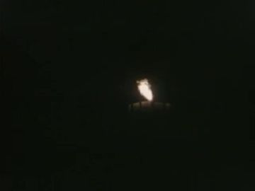
white pillar candle with a flickering flame
15 cm cream card with wax drips in ink; three flame cards for flicker. States: lit (3 flames), out with smoke.
References found
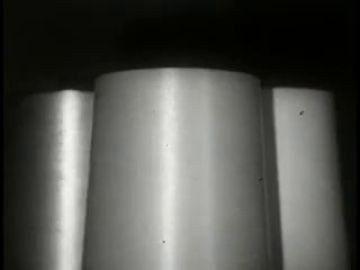
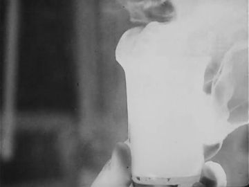
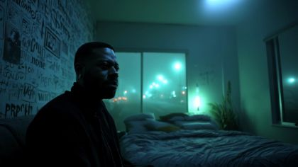
Generation prompt
Prop card sheet: a white pillar candle, flat corrugated-cardboard card 15 cm, cream gouache with inked wax drips, confident ink line, raw kraft cut edge; flat-on even light, plain white background. Separate cards: 1 candle body, 2 flame tall, 3 flame leaning left, 4 flame small, 5 candle out with a thin grey smoke curl.
a scope reticle that breaks into rings
Code-drawn thin black cross with tick marks; dissolves cell by cell into concentric paper rings. States: reticle, half-dissolved, rings.
Generation prompt
Prop card sheet: a gun-scope reticle and its undoing, flat corrugated-cardboard cut-outs, thin black ink cross with tick marks on a clear circle, confident ink line, raw kraft cut edge; flat-on even light, plain white background. Separate cards: 1 full reticle, 2 reticle arms broken into small squares, 3 three thin concentric kraft rings.
the front door of the house where people enter
Painted wooden door frame card, 220 cm, deep red; open door leaf at 60°; the warm interior is an empty pane for the archive. States: open lit, open with a figure passing.
Generation prompt
Prop card sheet: a city house front door, flat corrugated-cardboard card 220 cm, deep red painted wooden frame with chipped edges and a brass number, the door leaf open at an angle, the doorway left as a plain warm-amber panel, confident ink line, raw kraft cut edge, brass brads at the hinges; flat-on even light, plain white background. Separate cards: 1 frame, 2 open door leaf, 3 closed door leaf, 4 warm light spill shape for the step.
old brass oil lantern with a warm flame
35 cm brass card body, a clear acetate globe, a separate flame card. States: lit (with flicker card), low, unlit.
References found
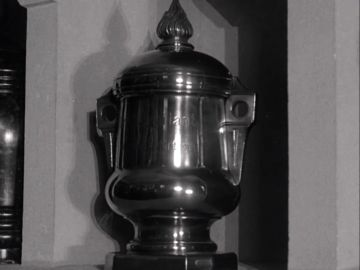
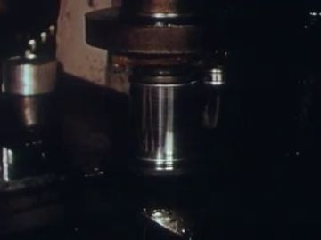
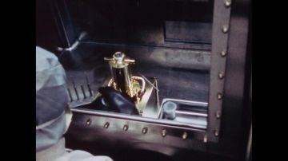
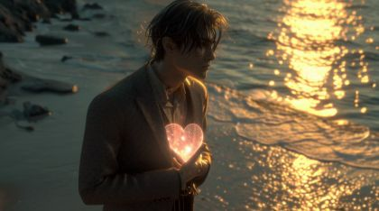
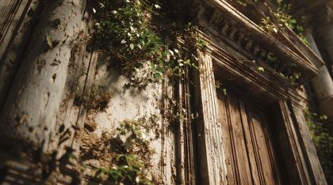
Generation prompt
Prop card sheet: an old brass oil lantern, flat corrugated-cardboard card 35 cm, brass gouache with ink dents and a clear-glass chimney drawn in pale blue lines, confident ink line, raw kraft cut edge, brass brad at the handle; flat-on even light, plain white background. Separate cards: 1 lantern lit (amber flame card in the chimney), 2 lantern low flame, 3 lantern unlit, 4 flame alone.
thick translucent coin glowing faint blue, engraved spiral
4 cm (painted large at 12 cm for the insert), pale blue-white card disc with an inked spiral and a soft glow. States: in hand, on the counter, glowing as accepted.
References found
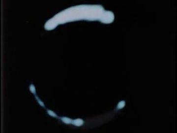
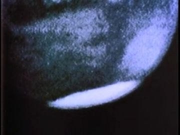
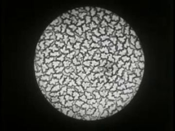
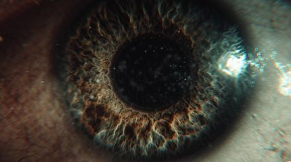
Generation prompt
Prop card sheet: a thick translucent coin, flat corrugated-cardboard disc 12 cm, pale blue-white gouache with an engraved spiral in fine ink and a faint glow edge, confident ink line, raw kraft cut edge; flat-on even light, plain white background. Separate cards: 1 coin face, 2 coin edge-on (thick), 3 coin glowing brighter blue (accepted), 4 coin pinched between two brown fingertips.
small marble-and-glass booth with a neon rim and a counter
220 cm. A white marble card body, an acetate glass window, a teal neon rim as a separate gel strip, and a counter ledge card in front of the gatekeeper. States: neon off, neon on, accepted (a soft pink flash).
References found
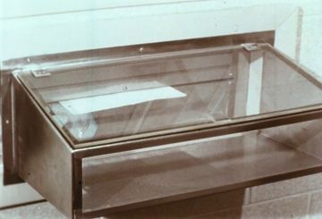
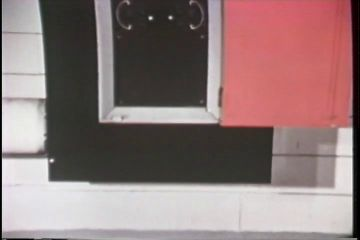
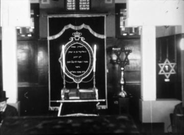
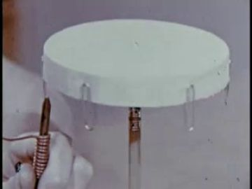
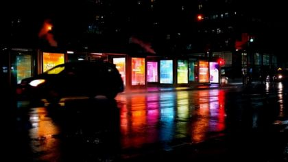
Generation prompt
Prop card sheet: a small marble ticket booth, flat corrugated-cardboard card 220 cm tall, white marble gouache with grey veins, a pale glass window, a thin teal neon tube outlining the roof, a narrow counter ledge, confident ink line, raw kraft cut edge, brass brads at the counter hinge; flat-on even light, plain white background. Separate cards: 1 booth neon off, 2 booth neon lit teal, 3 counter ledge alone, 4 neon rim alone in pink.
the winged marble gate leaves seen from the Atlantis side
Reuse 05's wing-leaf cards; add a lintel inscribed with no words, only a carved comet. States: closing behind him, open.
Generation prompt
Prop card sheet: a marble gate lintel and two winged door leaves seen from behind, flat corrugated-cardboard cards, white marble gouache with grey veins and carved feather rows, a carved comet on the lintel, confident ink line, raw kraft cut edge, brass brads on the hinges; flat-on even light, plain white background. Separate cards: 1 lintel, 2 left wing leaf open, 3 right wing leaf open, 4 both leaves closed.
worn acoustic guitar with painted flowers
100 cm warm-brown card body with painted flowers around the sound hole, strings as ink lines. States: still, strummed (vibration lines card).
References found
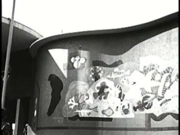
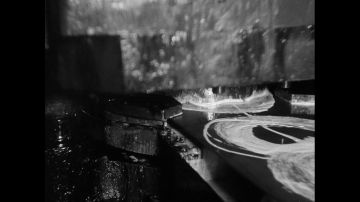
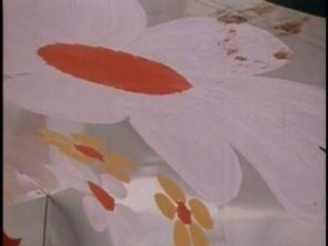
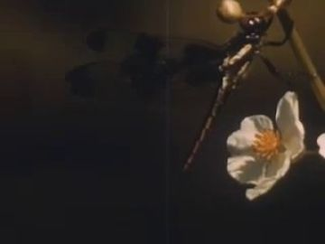
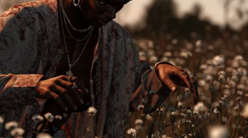
Generation prompt
Prop card sheet: a worn acoustic guitar, flat corrugated-cardboard card 100 cm, honey-brown gouache with worn edges and small painted flowers around the sound hole, strings in fine ink, confident ink line, raw kraft cut edge, brass brad at the neck for the fretting hand; flat-on even light, plain white background. Separate cards: 1 guitar, 2 strings-vibrating overlay with small rainbow lines.
Places
causeway_road
A yellow-brick causeway running straight out over black water to a drowned city, with only spire tips and a dome above the surface. Comets cross toward the dome. A long file of generations walks away from us.
Where the archive opens: the ELDER's lantern glass (small, bright, close); the lit dome on the horizon (far: weak); the water (faint: avoid)
References: our footage, Atlantis views, found film
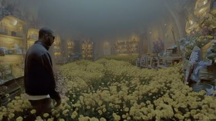
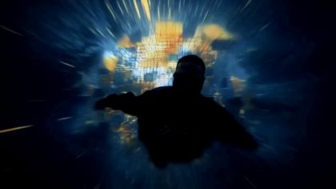
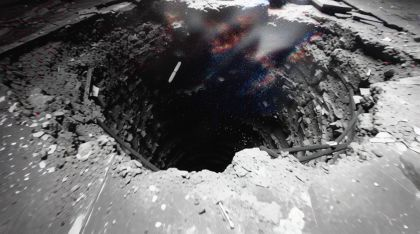
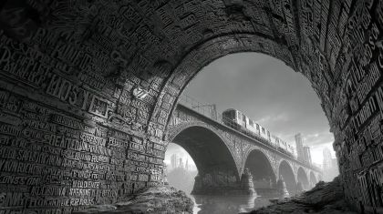
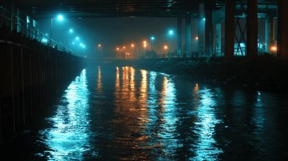
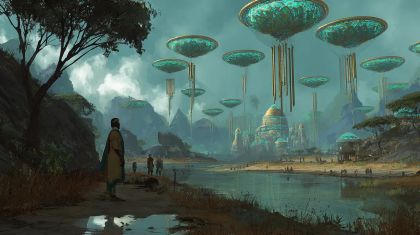
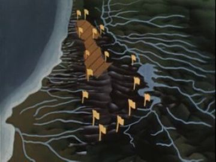
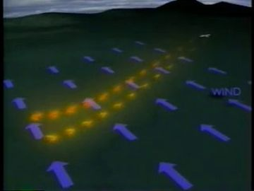
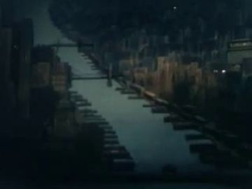
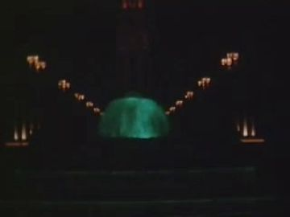
Generation prompt
A straight yellow-brick causeway running out across still black water at night toward a city whose spire tips and one glowing dome barely break the surface, gold reflections on the water, two comets crossing the sky toward the dome, no people, 16:9, photographic, low camera, deep perspective.
atlantis_waterfront
The shore as the sea falls away from Atlantis: wet marble domes and towers, green and pink neon, vines on terraces, water streaming off every ledge.
Where the archive opens: a lit tower window band as it clears the water; the dome face; the retreating water (weak)
References: our footage, Atlantis views, found film
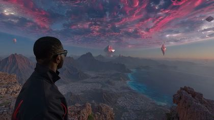
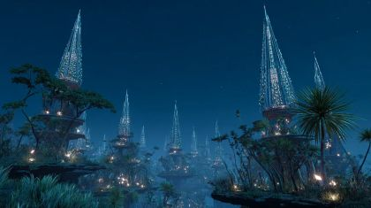
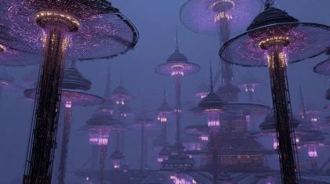
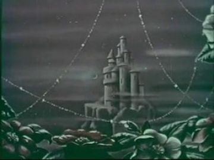
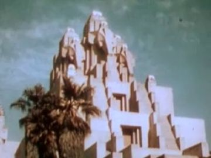
Generation prompt
Night, a marble city of domes and towers rising out of the sea, water pouring off ledges and terraces, green and pink neon signs dripping, vines on the terraces, a shoreline of wet rocks in the foreground, no people, 16:9, photographic.
No plate yet.
atlantis_gate
The city gate seen from the queue: an admission booth with a neon rim, two candle-lit lantern-windows in the wall, and beyond, people standing small and warm in the light.
Where the archive opens: the two arched lantern-windows (vertical, warm: best); the booth glass; the gate arch opening
References: our footage, Atlantis views, found film
Generation prompt
Night, the entrance gate of an afro-futurist marble city, a small marble-and-glass admission booth with a teal neon rim beside a tall arch, two arched windows in the wall glowing with candlelight, warm-lit people small beyond the arch in teal fog, no people in the foreground, 16:9, photographic.
narrow_streets
Colonial streets barely two people wide, remade for the city: painted walls, red lanterns, string lights, neon, long shadows, a musician in an alcove, clouds loosening between the roofs.
Where the archive opens: the painted wall of the musician's alcove (view_061); a lit shopfront pane (gen_ec59e580b9); the lantern faces (small)
References: our footage, Atlantis views, found film
atlantis_plaza
The central plaza under the capital dome with a beacon on top. Windows all round light at once; citizens enter from the edges and raise their arms together.
Where the archive opens: the window grid around the plaza (many small panes: use for a mosaic of archive faces); the dome face; the paving circle (top-down)
References: our footage, Atlantis views, found film
Generation prompt
Night, a round central plaza of rose marble seen from high above, a great dome with a light beacon on top at one edge, every window in the surrounding buildings lit warm, no people, 16:9, photographic.
house_party_exterior
The doorway of a city house: red frame, warm light and music spilling into the street, guests stepping in. This is the threshold to 07.
Where the archive opens: the open doorway (vertical, bright: best); a lit front window; the door leaf panel
References: our footage, Atlantis views, found film
Generation prompt
Night, a narrow city street, the front door of an old house open wide with a red wooden frame, warm amber light and coloured party light spilling onto the step and street, no people, 16:9, photographic, door square to camera.
Effects
| effect | how, in this cut-out world |
|---|---|
| comets_overhead | Paper comet cards with long tissue tails pulled on a diagonal track; the tail tears off softly at the end. |
| soul_light_rising | A small amber paper disc lifts from a traveller's chest on a wire, then follows a comet's path. |
| comet_landing_spark | A cut star-flare card pops on the dome tip for 6 frames, then decays to a steady point. |
| waterline_falling | A blue cellophane water card pulled down in front of the city; water streaming is a stack of white paper drips sliding on loops. |
| water_and_neon_reflections | Foil and gel strips on gloss-black card under each light, rippled with a slow displacement. |
| neon_signage | Acetate gel shapes backlit, with a 1-frame flicker every few seconds. |
| candle_flicker | Swap among three flame cards at random 2-4 frame intervals; the warm gradient on faces breathes with them. |
| long_street_shadows | Project the Our Community (1952) dappled-shadow archive across the wall cards; cast hard puppet shadows at a low angle. |
| rainbow_light | Prism stripes (code) thrown from the guitar's sound hole across the wall and onto his face card, pulsing with the strum. |
| clouds_released | Grey tissue clouds tethered between roofs by threads; the threads snap and the clouds drift up and out. |
| crosshair_to_rings | Code-drawn reticle over the plaza; its arms break into squares that fly outward and settle as concentric kraft rings, echoing the iris in gen_9f26db2b7a. |
| windows_lighting | A grid of window cut-outs lit by a sweep from centre outward in one second; dome beacon last. |
| music_light_spill | A warm polygon of light on the step and street that pulses lightly; coloured flecks drift out of the doorway. |
The puppet passage
his line · 06_L13
“serendipity. A city born in unison out of the purest of fictions welcoming me and welcoming all.”
the archive answers · Belmont Woman's Club Tour 2009 (2009)
“The spout had to be facing the door as a sign of welcoming.”
a hand that stops short · door: the open front door of the house where people are entering
Keep. 'Purest of fictions' is the right line: the poem admits the city is made just as he reaches a real door. A hand that stops short is one held gesture, and an open doorway is a tall, bright, vertical surface, the strongest kind. The Belmont Woman's Club tour ('the spout had to be facing the door as a sign of welcoming') is warm daylight interior film, so it will read inside a night frame.
Better. Build the door as a near-layer card frame so the archive fills a large pane, not a small far one. Keep the street plate figure-free and move the entering guests to cut-out party_guest cards passing behind the frame edge. Use the profile head and a dedicated 'reach-stopping-short' hand card; let the music light spill on his hand and stop at the same gap. If P06-011 has generated figures at the door, crop to gen_9c5f9c7c4a's doorway instead.
Other lines that could carry one:
- 06_L09 'An unfamiliar flickering candlelight illuminating smiles': object held out, a citizen offers a candle across the counter; the arched lantern-window in the gate wall opens on home-movie faces by candlelight (birthday or vigil archive).
- 06_L12 'leaving behind crosshairs for continuums': fist at the chest opens into a flat palm (one held change); a lit shopfront pane (gen_ec59e580b9) opens on a training-film gunsight that the code turns into ripples.
- 06_L01 'The gates open with wings gifted from evolution': palm on the marble leaf as it opens; the widening seam between the wings opens on Invitation to a Nation (1946, arch_2e67f50d), the dome framed in an arch.
- 06_L05 'Here we are all one': arms open and held at the waterline; a tower's lit window band clearing the water opens on archive of a crowd joining hands (dance, church, march).
Scene ideas
- Causeway in layers: four receding brick trapezoids on gloss-black card, view_035's spires sunk to the tips, and the ELDER's lantern glass playing How Man Made Day (arch_be3bace2) as the flame. The lantern is the archive.
- The waterline falls: a blue cellophane sheet slides down in front of gen_69ee5bb28b's marble city while paper drips loop off the ledges. On the dome, one bright window band shows a 1939 World's Fair illuminated tower.
- Admission: the coin card sets down on the booth counter and the booth glass shows a brief archive of ticket-takers and turnstiles. The coin glows, the neon rim goes pink and the queue moves.
- Candle windows: two arched cut-outs shaped after This Is Russia (arch_d4664dde) hold citizen head cards that swap calm→joy as candle flames (arch_aef90d78) rise into frame.
- Narrow street track: view_062 as plate, the puppet on a rail, Our Community (1952) shadows sliding across the walls, string-light card overhead. Over the cut to the musician alcove (view_061), prism light hits the wall.
- Crosshairs to continuums: a reticle over view_033's round plaza; its arms shatter into rings that match gen_9f26db2b7a's iris, then a cut to the puppet's braced head swapping to lifted.
- Clouds set free: tissue clouds tethered between roof cards snap loose into Sunburst (arch_5e2737d2) light. 'Infinite time to heal' is held on that shot.
- The door: the near-layer red frame over gen_9c5f9c7c4a, with the corridor lamps of the Custom House film (arch_7c142971) as the interior seen past the guests before the Belmont answer plays.
References to look for
| what | where to look |
|---|---|
| The Wizard of Oz (1939), approach to the Emerald City | the yellow-brick road to a made city; poppy-field-to-gate staging |
| Faith Ringgold, Tar Beach and story quilts | a Black city at night seen with joy and flight; flat pattern, lit windows |
| Romare Bearden, The Block | collaged street facades with people in windows; cut-paper city density |
| Michel Ocelot, Azur & Asmar; Lotte Reiniger | ornate silhouette cities, gates and lanterns in cut-out |
| Roy DeCarava, 'The Sound I Saw'; Ernest Withers | night streets, music spilling from doorways, Black community joy |
| Archive: World's Fair illuminations | 'Golden Gate International Exposition night', 'New York World's Fair 1939 illumination', 'Treasure Island lights', 'fountain night colour' |
| Archive: candlelight and community | 'candlelight vigil', 'block party home movie', 'front porch 1950s', 'street musician', 'church supper', 'house tour welcome' |
Our footage for this poem
The 20 generated clips and 8 Atlantis views closest to the poem (CLIP, image against its treatment and lines).
The kit
| status | kind | item | source |
|---|---|---|---|
| need | fx | comets, waterline, candle flicker, crosshair-to-rings, windows lighting, clouds released | code + paper |
| need | head | Sunglasses card with neon reflections | to paint |
| need | prop | oil_lantern, candle, relearned_coin | to generate (prompts above) |
| need | prop | admission_booth, door_frame, guitar | to generate |
| need | set | gate with lantern-windows and booth | to generate; inside = assets/view_096.jpg |
| need | sound | hymn/orchestra swell, candle crackle, street guitar, crowd joy, music spill | to find |
| partial | body | POET red_black_sunglasses bodies + walk cycle (threequarter back) | existing pack poet.red_black_sunglasses.body.* (unpainted) |
| partial | body | POET sitting replacement (on a step) | poet.red_black_sunglasses.replacements.jpg 'sitting' cell |
| partial | body | Atlantis citizen bodies (3 variants) + 5 faces | atlantis.atlantis_citizen.* layouts; faces to generate |
| partial | body | Atlantis traveler back views with bags | atlantis.atlantis_traveler.* |
| partial | body | Gatekeeper seated + elder with lantern | atlantis.atlantis_gatekeeper.*, atlantis.poet_elder_coat.* |
| partial | body | Party guest back views (3) | party.party_guest.* (shared with 07) |
| partial | hand | POET hands: pinch coin, fist-at-chest, open-on-chest, reach-stopping-short, in_pocket | poet.red_black_sunglasses.hands.jpg + new reach card |
| partial | head | POET heads: awe-up, joy, calm, braced, lifted, profile | poet.red_black_sunglasses.heads.jpg + new braced/lifted |
| partial | prop | gate wings (from 05) | 05 gate_wing_leaves + lintel |
| partial | set | causeway plate / brick trapezoid cards | assets/gen_75d69482bc.jpg + assets/view_035.jpg; brick cards to make |
| partial | set | waterfront city | assets/gen_69ee5bb28b.jpg + water card |
| partial | set | house door plate | assets/gen_9c5f9c7c4a.jpg / P06-011 + door_frame card |
| have | fx | archive inserts: How Man Made Day lantern, This Is Russia window, Invitation to a Nation dome, Our Community shadows, Belmont Woman's Club Tour | archive (thumbs in 06.json; passage clip b75a9254) |
| have | set | narrow streets plate | assets/view_062.jpg, assets/view_061.jpg |
| have | set | plaza plate | assets/view_033.jpg + dome card |